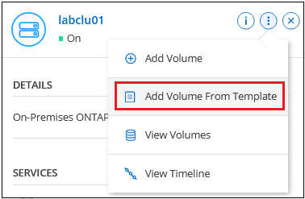
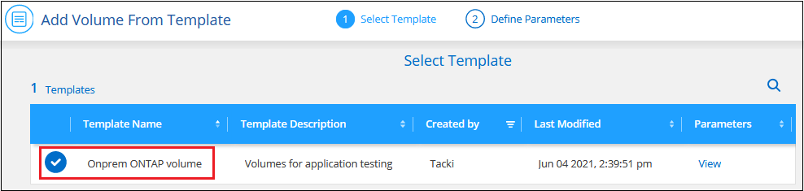

문서 변경 요청
문서 변경 요청 이 페이지 편집
이 페이지 편집 기여하는 방법 자세히 알아보기
기여하는 방법 자세히 알아보기온프레미스 ONTAP 클러스터를 위한 스토리지 관리
Cloud Manager에서 온프레미스 ONTAP 클러스터를 검색할 경우 작업 환경을 열어 스토리지를 프로비저닝하고 관리할 수 있습니다.
볼륨 생성 중
Cloud Manager를 사용하면 기존 애그리게이트에 NFS 또는 CIFS 볼륨을 생성할 수 있습니다. Cloud Manager를 사용하여 온프레미스 ONTAP 클러스터에 새 애그리게이트를 생성할 수 없습니다.
"템플릿"이라는 Cloud Manager 기능을 사용하면 데이터베이스 또는 스트리밍 서비스와 같은 특정 애플리케이션의 워크로드 요구사항에 최적화된 볼륨을 생성할 수 있습니다. 조직에서 사용해야 하는 볼륨 템플릿을 만든 경우 를 따릅니다 수행할 수 있습니다.
-
Canvas 페이지에서 볼륨을 프로비저닝할 온프레미스 ONTAP 클러스터의 이름을 두 번 클릭합니다.
-
새 볼륨 추가 * 를 클릭합니다.
-
마법사의 단계에 따라 볼륨을 생성합니다.
-
* 세부 정보 및 보호 *: 볼륨에 대한 기본 세부 정보를 입력한 다음 스냅샷 정책을 선택합니다.
이 페이지의 일부 필드는 설명이 필요 없습니다. 다음 목록에서는 지침이 필요한 필드를 설명합니다.
필드에 입력합니다 설명 크기
입력할 수 있는 최대 크기는 씬 프로비저닝의 사용 여부에 따라 크게 달라집니다. 이를 통해 현재 사용 가능한 물리적 스토리지보다 더 큰 볼륨을 생성할 수 있습니다.
스냅샷 정책
스냅샷 복사본 정책은 자동으로 생성되는 NetApp 스냅샷 복사본의 수와 빈도를 지정합니다. NetApp 스냅샷 복사본은 성능 영향이 없고 최소한의 스토리지가 필요한 시점 파일 시스템 이미지입니다. 기본 정책을 선택하거나 선택하지 않을 수 있습니다. Microsoft SQL Server의 tempdb와 같이 임시 데이터에 대해 없음을 선택할 수 있습니다.
-
* 프로토콜 *: 볼륨의 프로토콜(NFS 또는 CIFS)을 선택한 다음 볼륨에 대한 액세스 제어 또는 권한을 설정합니다.
CIFS를 선택하고 서버가 아직 설정되지 않은 경우 Cloud Manager에서 Active Directory 또는 작업 그룹을 사용하여 CIFS 서버를 설정하라는 메시지를 표시합니다.
다음 목록에서는 지침이 필요한 필드를 설명합니다.
필드에 입력합니다 설명 액세스 제어
NFS 엑스포트 정책은 볼륨에 액세스할 수 있는 서브넷의 클라이언트를 정의합니다. 기본적으로 Cloud Manager는 서브넷의 모든 인스턴스에 대한 액세스를 제공하는 값을 입력합니다.
권한 및 사용자/그룹
이러한 필드를 사용하면 사용자 및 그룹(액세스 제어 목록 또는 ACL라고도 함)에 대한 SMB 공유에 대한 액세스 수준을 제어할 수 있습니다. 로컬 또는 도메인 Windows 사용자 또는 그룹, UNIX 사용자 또는 그룹을 지정할 수 있습니다. 도메인 Windows 사용자 이름을 지정하는 경우 domain\username 형식을 사용하여 사용자의 도메인을 포함해야 합니다.
-
* Usage Profile *: 볼륨에서 스토리지 효율성 기능을 활성화 또는 비활성화할지 여부를 선택합니다.
ONTAP에는 필요한 총 스토리지 양을 줄일 수 있는 몇 가지 스토리지 효율성 기능이 포함되어 있습니다. NetApp 스토리지 효율성 기능은 다음과 같은 이점을 제공합니다.
- 씬 프로비저닝
-
에서는 실제 스토리지 풀에 있는 것보다 더 많은 논리적 스토리지를 호스트 또는 사용자에게 제공합니다. 스토리지 공간을 사전에 할당하는 대신 데이터가 기록될 때 스토리지 공간을 각 볼륨에 동적으로 할당합니다.
- 중복 제거
-
동일한 데이터 블록을 찾아 단일 공유 블록에 대한 참조로 대체하여 효율성을 향상시킵니다. 이 기술은 동일한 볼륨에 상주하는 중복된 데이터 블록을 제거하여 스토리지 용량 요구 사항을 줄여줍니다.
- 압축
-
1차, 2차 및 아카이브 스토리지의 볼륨 내에서 데이터를 압축하여 데이터를 저장하는 데 필요한 물리적 용량을 줄입니다.
-
* Review * (검토 *): 볼륨에 대한 세부 정보를 검토한 다음 * Add * (추가 *)를 클릭합니다.
-
템플릿에서 볼륨 생성
조직에서 특정 애플리케이션의 워크로드 요구사항에 최적화된 볼륨을 구축할 수 있도록 사내 ONTAP 볼륨 템플릿을 만든 경우 이 섹션의 단계를 따릅니다.
템플릿에 디스크 유형, 크기, 프로토콜, 스냅샷 정책 등과 같은 특정 볼륨 매개변수가 이미 정의되어 있기 때문에 템플릿을 사용하면 작업을 보다 쉽게 수행할 수 있습니다. 매개 변수가 이미 미리 정의된 경우 다음 볼륨 매개 변수로 건너뛸 수 있습니다.

|
템플릿을 사용하는 경우에만 NFS 또는 CIFS 볼륨을 생성할 수 있습니다. |
-
Canvas 페이지에서 볼륨을 프로비저닝할 온-프레미스 ONTAP 시스템의 이름을 클릭합니다.
-
을 클릭합니다
 > * 템플릿에서 볼륨 추가 *.
> * 템플릿에서 볼륨 추가 *.
-
Select Template_page에서 볼륨을 생성하는 데 사용할 템플릿을 선택하고 * Next * 를 클릭합니다.

Define Parameters_page가 표시됩니다.

-
참고: * 해당 매개 변수의 값을 보려면 * 읽기 전용 매개 변수 표시 * 확인란을 클릭하여 템플릿에 의해 잠긴 모든 필드를 표시할 수 있습니다. 기본적으로 이러한 미리 정의된 필드는 숨겨지고 완료해야 하는 필드만 표시됩니다.
-
-
context_area에서 작업 환경은 처음 시작한 작업 환경의 이름으로 채워집니다. 볼륨을 생성할 * 스토리지 VM * 및 * 애그리게이트 * 를 선택해야 합니다.
-
템플릿에서 하드 코딩되지 않은 모든 매개변수에 대한 값을 추가합니다. 을 참조하십시오 볼륨 생성 중 사내 ONTAP 볼륨을 구축하기 위해 완료해야 하는 모든 매개 변수에 대한 자세한 내용은
-
이 볼륨에 필요한 모든 매개 변수를 정의한 후 * 템플릿 실행 * 을 클릭합니다.
Cloud Manager는 볼륨을 프로비저닝하고 진행 상황을 볼 수 있도록 페이지를 표시합니다.

그러면 새 볼륨이 작업 환경에 추가됩니다.
또한 볼륨에 Cloud Backup을 설정하는 등 템플릿에 보조 작업이 구현되는 경우 해당 작업도 수행됩니다.
CIFS 공유를 프로비저닝한 경우 파일 및 폴더에 대한 사용자 또는 그룹 권한을 제공하고 해당 사용자가 공유를 액세스하고 파일을 생성할 수 있는지 확인합니다.
데이터 복제
1회 데이터 복제를 선택하여 Cloud Volumes ONTAP 시스템과 ONTAP 클러스터 간에 데이터를 복제할 수 있습니다. 이 경우 클라우드 간에 데이터를 이동하거나, 재해 복구 또는 장기 보존에 도움이 되는 반복 일정을 선택할 수 있습니다.
데이터 백업
클라우드 백업을 사용하여 사내 ONTAP 시스템의 데이터를 클라우드의 저렴한 오브젝트 스토리지로 백업할 수 있습니다. 이 서비스는 온프레미스 및 클라우드 데이터의 보호 및 장기 아카이브를 위한 백업 및 복원 기능을 제공합니다.
데이터를 스캔, 매핑 및 분류합니다
Cloud Data Sense는 기업의 사내 클러스터를 스캔하여 데이터를 매핑 및 분류하고, 개인 정보를 식별할 수 있습니다. 따라서 보안 및 규정 준수 위험을 줄이고 스토리지 비용을 절감하며 데이터 마이그레이션 프로젝트를 지원할 수 있습니다.
데이터를 클라우드에 계층화
Cloud Tiering을 사용하여 ONTAP 클러스터에서 오브젝트 스토리지로 비활성 데이터를 자동으로 계층화하여 데이터 센터를 클라우드로 확장하십시오.